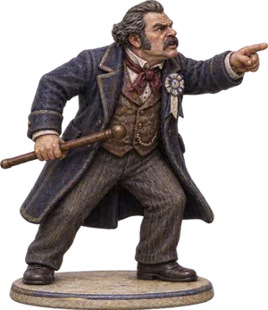
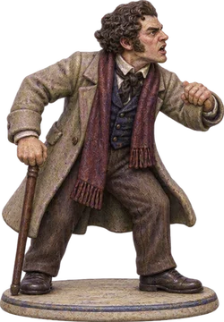

Голоса отсутствующих
Карты и фигурки ведущего
Игровой комплект
3 игрока · 4 игрока · 5 игроков · 6 игроков · 7 игроков · 8 игроков
Карта кампании

Поля боя


Герои


Персонажи ведущего


Противники


Упрямый распорядитель 2Упрямый распорядитель 3Упрямый распорядитель 5Упрямый распорядитель 4Упрямый распорядитель 1Упрямый распорядитель 6Сердитый устроитель 1Сердитый устроитель 6Сердитый устроитель 4Сердитый устроитель 3Сердитый устроитель 5Сердитый устроитель 2


Настойчивый спорщик 6Настойчивый спорщик 1Настойчивый спорщик 3Настойчивый спорщик 4Настойчивый спорщик 2Настойчивый спорщик 5